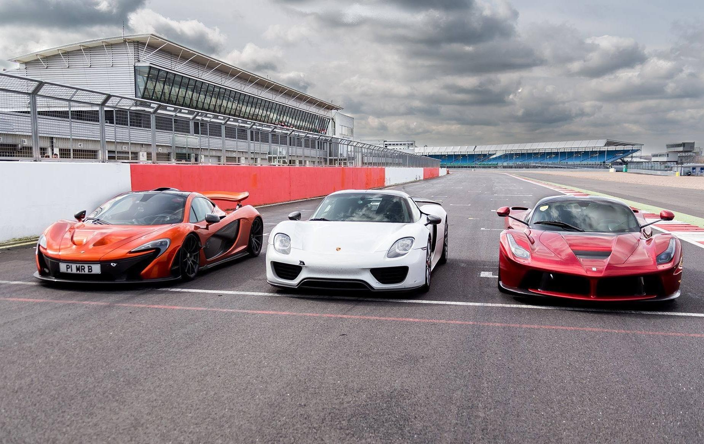

I
Ferrari — Der Benchmark
Ferrari setzte mit dem LaFerrari den ersten Masstab. Als einziger Hersteller mit einem V12-Hybrid wollte Maranello beweisen, dass Emotion und Technologie kein Widerspruch sind.
Drei Hersteller. Drei Philosophien. Eine einzige Frage: Wer baut das ultimative Hypercar?

Ferrari setzte mit dem LaFerrari den ersten Masstab. Als einziger Hersteller mit einem V12-Hybrid wollte Maranello beweisen, dass Emotion und Technologie kein Widerspruch sind.
McLaren kam mit der Erfahrung aus der Formel 1 und dem P1 — einem Auto, das nicht nur schnell, sondern auch auf der Rennstrecke zuhause sein sollte. Die Antwort auf Ferrari.
Porsche überraschte alle: Der 918 Spyder war das effizienteste und in vielen Tests schnellste Auto der drei — und dabei noch das günstigste. Ein Statement aus Stuttgart.
Um 2010 wurde klar, dass die nächste Generation von Hypercars elektrische Unterstützung brauchen würde — nicht aus Umweltgründen, sondern weil reine Verbrennungsmotoren an ihre physikalischen Grenzen stiessen. Die Kombination aus Verbrenner und E-Motor versprach nicht nur mehr Leistung, sondern auch bessere Traktion und Effizienz.
Ferrari, McLaren und Porsche begannen fast zeitgleich, an ihren jeweiligen Flaggschiffen zu arbeiten. Keiner wusste genau vom anderen — und doch entstand eine der grössten Rivalitäten der Automobilgeschichte. Jeder Hersteller verfolgte eine eigene Philosophie: Ferrari setzte auf rohe Emotion mit einem V12, McLaren auf Rennstrecken-DNA aus der Formel 1, und Porsche auf deutsche Ingenieurskunst mit Alltagstauglichkeit.
Als alle drei Autos fast zur gleichen Zeit vorgestellt wurden, war die Fachwelt verblüfft: Drei völlig unterschiedliche Ansätze, drei verschiedene Philosophien — und alle drei brillant. Die Medien tauften sie schnell «The Holy Trinity» — die heilige Dreifaltigkeit der Hypercars.